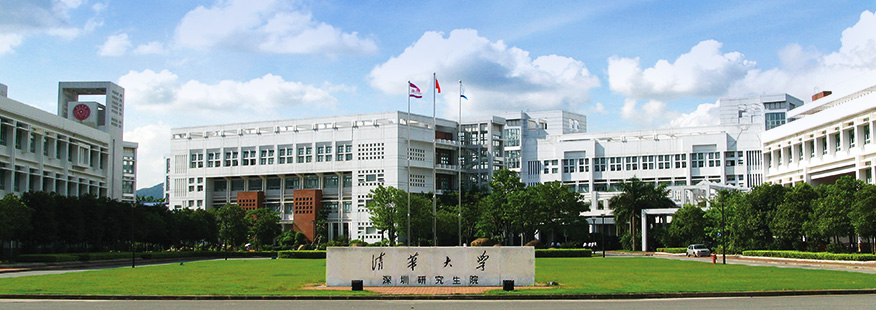

学院概述

清华大学深圳研究生院成立于2001年，座落于深圳市南山区西丽大学城。清华大学深圳研究生院是清华大学和深圳市合作创建的高层次人才培养基地和科技创新基地，直属清华大学，为清华大学唯一的异地办学机构，是清华大学教育改革的试验田创建世界一流大学的重要组成部分。
目前，有在校全日制研究生3000余人，其中博士生360余人。累计招收全日制学生9000余人，其中博士生900余人。向社会输送了6000余名毕业生。
清华大学深圳研究生院的教师队伍以专职教师为主，双基地教师、博士后和兼职教师为辅。有专职教师160余人，博士后80余人，副教授以上职称的双基地教师280余人。钱易院士、卢强院士、朱静院士、陈肇元院士、陈立泉院士、李龙土院士、范维澄院士、郝吉明院士、郑健超院士、孔祥復院士、李立浧院士都在清华大学深圳研究生院担任双聘教授或双基地教师。
同一学校，同一品牌，秉承同一文化传统，创业创新，南国谱新篇。清华大学深圳研究生院坚持“扎根深圳，心系清华”的办学定位和“学科交叉，创新创业”的办学理念，凝练了“国际化、创新创业型、复合式”的人才培养特色，秉承清华“顶天、立地、树人”的科研宗旨，积极开展社会服务，探索文化的传承与创新，将在高层次人才培养、原创性科学研究、高科技成果转化等方面努力为深圳市及周边地区的经济和社会发展服务，为清华大学探索异地办学经验、为深圳高等教育的跨越式发展做出新的贡献。
清华大学深圳研究生院招生专业主要为：
博士：环境科学与工程、仪器科学与技术、管理科学与工程（运筹学与物流）、电气工程、电子科学与技术、信息与通信工程、计算机科学与技术、控制科学与工程、材料科学与工程、物理学、化学、海洋科学、哲学、艺术学、生物医学工程等。
学术型硕士：土木工程、环境科学与工程、仪器科学与技术、管理科学与工程（物流工 程与管理）、电气工程、电子科学与技术、信息与通信工程、计算机科学与技术、控制科学与工程、材料科学与工程、物理学、化学、生物学、 海洋科学、工商管理、哲学、艺术学、生物医学工程、新能源、化学生物学（制药）、公共管理学（医院管理方向）、互联网+创新设计、BIO3生命技术等。
应用型硕士：法律硕士、金融硕士、艺术硕士、集成电路工程、机械工程、仪器仪表工程、物流工程、电气工程、电子与通信工程、材料工程、计算机技术工程、控制工程、生物医学工程、环境工程、安全工程等。
清华大学深圳研究生院已逐步建立起一批学科实验室及科研机构，包括国家级重点科研机构4个，省部级重点科研机构6个。清华大学深圳研究生院打破学科限制，探索“创新团队” 模式，目标是形成一批有特色、有实力的创新团队， 在未来逐步建设成为省部级乃至国家级的创新队伍，组建一批国际先进、国内一流的高层次实验室和工程中心，目前拥有广东省创新团队1个，深圳市孔雀团队1个，院创新团队10个。
清华大学深圳研究生院各类学生活动丰富多彩。体育运动代表队、紫荆志愿者服务团、清芬学生记者团、心理协会、学生职业发展协会、学生艺术团、水木话剧社等各类学生团体为同学们提供了激扬青春、施展才华的舞台。
清华大学深圳研究生院景色宜人，大沙河清水碧波，在校园里缓缓穿流;荷塘月色再现南国校园，倒映出周边的湖光山色;校园内绿草美树，清芬秀丽，自然与人文融为一体，历史和现代交相辉映，具有独特的校园文化魅力。
目前校园建筑面积约11.99万平米。正全力推进深海研究、能源与环境、新型光电与先进制造、互联网科技等四个创新基地。四个创新基地规划10万平米、投资5亿元，全部由深圳市政府投资建设，同时也为开展产学研合作、技术转移、创新创业型人才培养提供有力的支撑。创新基地一期建设工程6.6万平方米，已于2016年投入使用。2016年1月，创新基地二期建设工程奠基。
在深圳市政府、清华大学和社会各界的关心和支持下，清华大学深圳研究生院正茁壮成长。我们相信，随着清华大学新百年和深圳市下一轮大发展的到来，清华大学深圳研究生院必将在清华大学创建世界一流大学和深圳市城市发展中发挥更大的作用。（2017年2月）